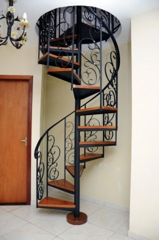

Sua melhor opção do mercado!
Bem Vindo
Desde 1995 atendendo com qualidade.
Somos especializados em projetos, confecção e instalação de escadas de madeira, metálicas, corrimãos. Trabalhamos também com Escada para Sótão em madeira e ferro (pantográfica), além de Escada Santos Dumont.
